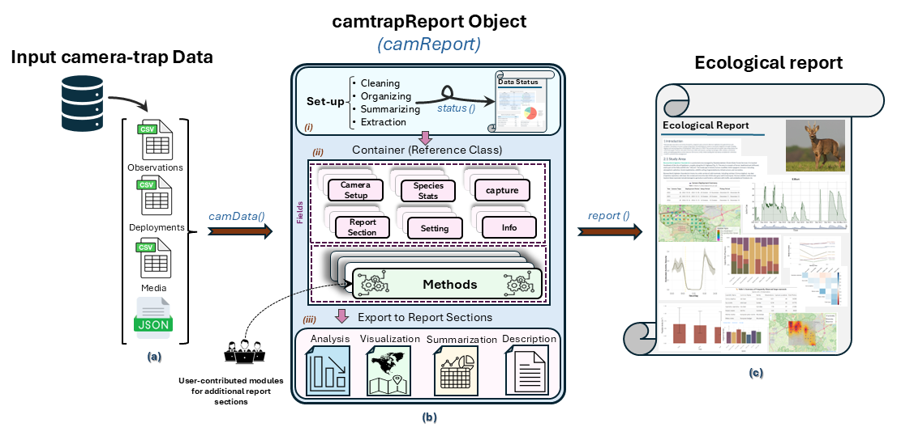

Introduction
camtrapReport is a modular R package for turning
camera-trap data into structured, reproducible ecological reports. The
package brings together data preparation, data-quality diagnostics,
ecological analysis, visualisation, and report generation in a single
workflow.
The workflow is built around a central camReport object,
created with camData(). This object stores the input data,
metadata, user settings, intermediate outputs, report sections, and
analytical modules. From this object, users can generate a Data Status
Check report using status() and an Ecological Report using
report().

Figure 1. Overview of the camtrapReport workflow, from input camera-trap data to the central camReport object and final report outputs.
Figure 1 summarises the main camtrapReport workflow.
Camera-trap data are imported with camData() and stored in
a central camReport object. This object supports
data-status checks, ecological analyses, visualisation, report
customisation, and automated report generation.
What camtrapReport is designed to do
camtrapReport is designed to bridge the gap between
standardised camera-trap data and reproducible ecological reporting. It
helps users assess whether a dataset is complete and internally
consistent, and supports the generation of ecological outputs through an
automated and reproducible workflow.
The package is intended to support researchers, monitoring practitioners, conservation managers, and the wider camera-trap community by reducing manual reporting effort and improving consistency across projects, sites, survey periods, and species groups.
Input data
The workflow requires a camera-trap dataset in Camtrap-DP format, provided as a ZIP archive. Optional supporting data, such as habitat information and study-area boundaries, can be added to improve visualisation, ecological analysis, and interpretation.
Key outputs
Data Status Check Report
The Data Status Check report evaluates whether a camera-trap dataset is complete, internally consistent, and suitable for ecological analysis and report generation. It summarises data-quality dimensions such as completeness, consistency, annotation quality, validation status, temporal mismatches, spatial outliers, and observation types.
Modular workflow
camtrapReport is built as a modular system. Each report
section is generated from one or more modules. A module may contain
text, R code, tables, figures, maps, or ecological summaries.
This structure allows users to select, remove, reorder, modify, or add report modules depending on the aims of the project.
New modules can also be added using YAML templates or custom R code, allowing users to extend the report workflow without changing the package core.
Conclusion
camtrapReport provides a unified workflow for moving
from camera-trap data to reproducible ecological outputs. By combining
data preparation, quality assessment, ecological analysis,
visualisation, and report generation in a modular framework, the package
helps users produce transparent and consistent reports from camera-trap
datasets.
The two main outputs are the Data Status Check report and the Ecological Report. Together, they help users assess data readiness, identify potential issues, and translate camera-trap records into interpretable ecological information.
To learn more, continue to the Data Status Report, Ecological Report, and How to add new modules? articles.